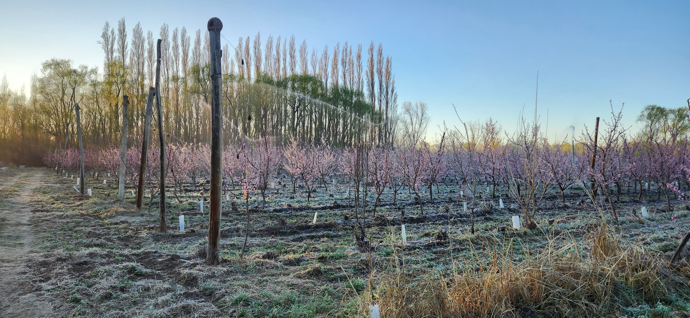
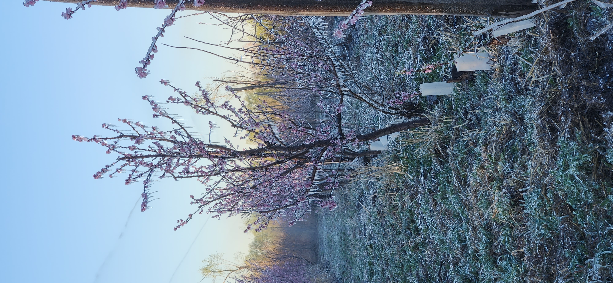
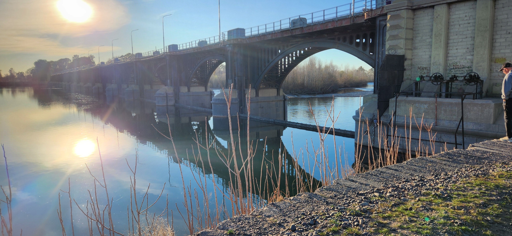
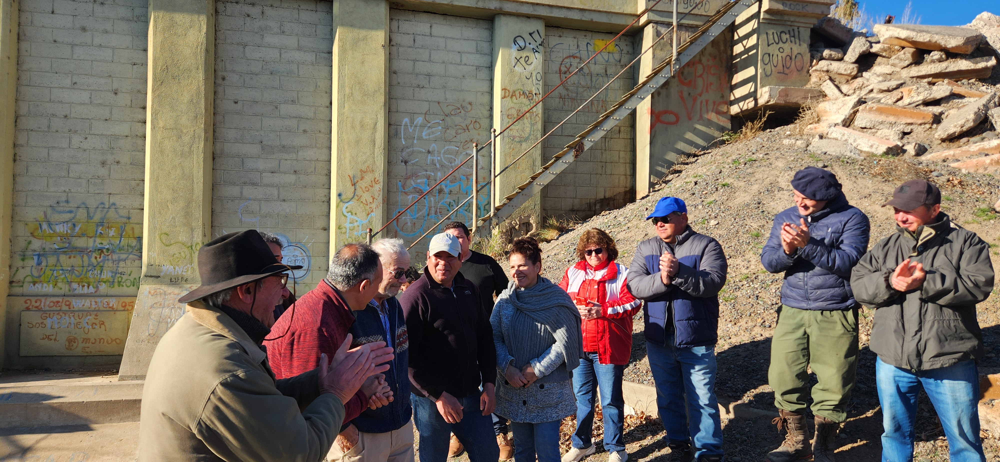
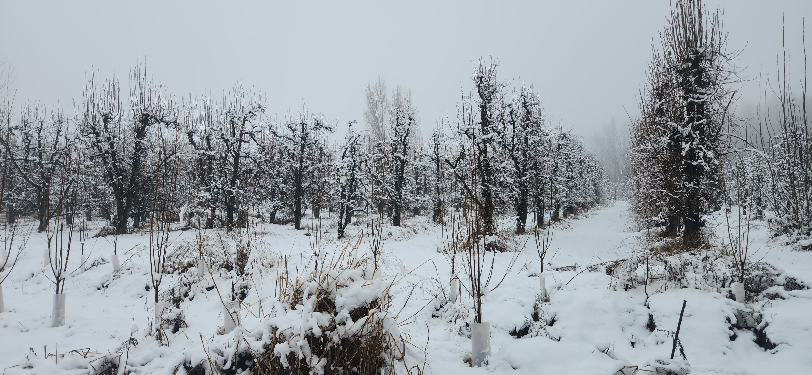
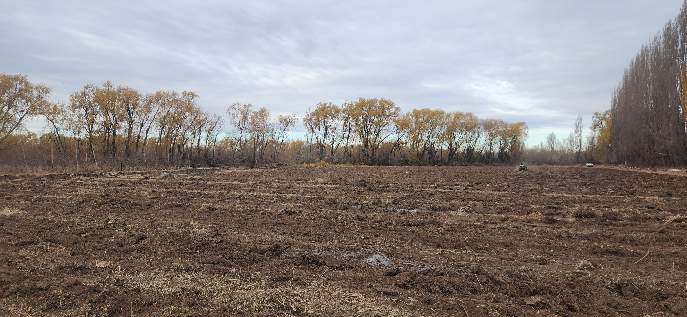
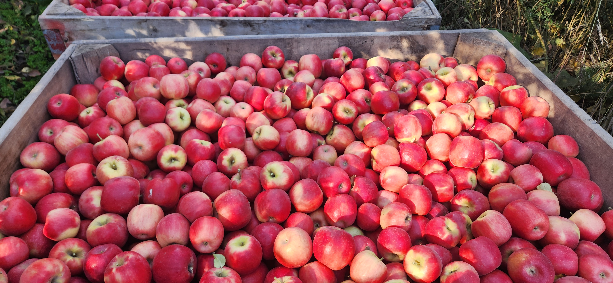
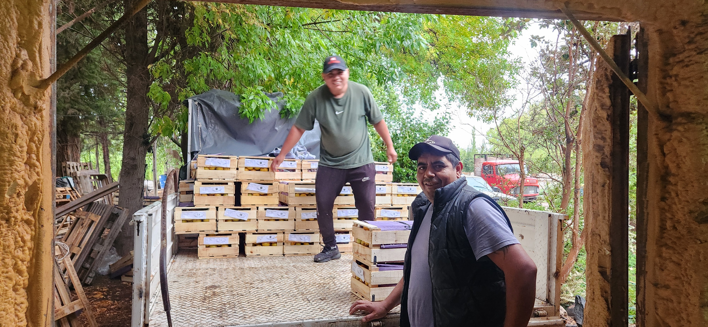
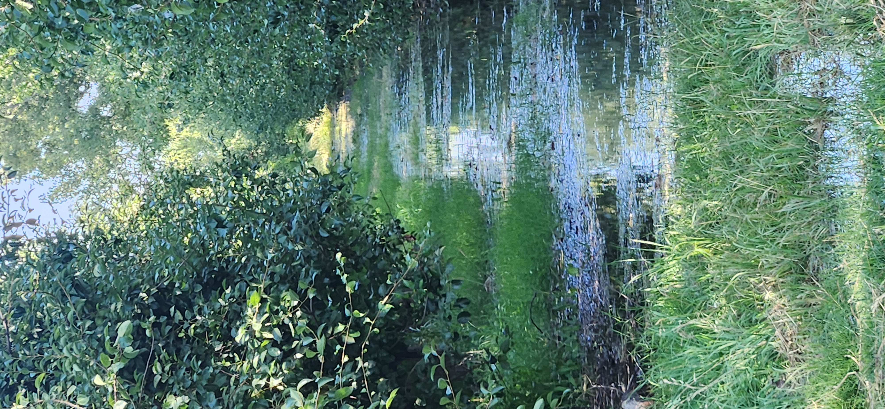

Bienvenidos a Chacra Vieja
Al norte de la Patagonia Argentina, el Río Neuquén dio origen a uno de los oasis productivos más importantes del país.
En Centenario, provincia de Neuquén, desde hace casi un siglo nuestra familia cultiva frutas de pepita y carozo, combinando tradición, innovación y un profundo respeto por el agua que da vida a nuestros montes.
Cuatro generaciones, un mismo compromiso
La historia de Chacra Vieja comenzó mucho antes que nosotros. Comenzó con la visión de transformar el desierto patagónico en un oasis productivo mediante el aprovechamiento de las aguas del Río Neuquén.
A fines del siglo XIX, el entonces presidente Julio Argentino Roca impulsó el desarrollo de un sistema de riego para la región, encomendando al ingeniero César Cipolletti el estudio y diseño de las obras. Con la construcción del dique derivador y la red de canales, inaugurados en 1910, el agua dio vida a uno de los oasis productivos más importantes de la Argentina.
Poco después, nuestra familia llegó a Centenario y comenzó a escribir su propia historia en el Lote Nº 132.
Desde entonces, cuatro generaciones han compartido un mismo compromiso: cuidar la tierra, valorar el agua y producir fruta de calidad.
Cada generación tuvo que enfrentar sus propios desafíos.
La primera llegó a una tierra que exigía esfuerzo, sacrificio y perseverancia. No había dinero de sobra ni caminos fáciles. Había una familia que sostener, una tierra que trabajar y la necesidad de salir adelante. Con sus manos transformó esa tierra y abrió un camino donde antes solo había posibilidades.
La segunda generación tomó ese legado y lo hizo crecer. También fue una época de esfuerzo y sacrificio, pero apareció algo más: la pasión por producir. Se trabajó duro para sostener a la familia, crecer, incorporar nuevas tierras y convertirlas en tierras productivas. Y, casi sin darse cuenta, aquella necesidad se fue transformando en una forma de vida y en una pasión que sería transmitida a la tercera generación.
La tercera generación recibió mucho más que tierras. Recibió una historia, una cultura de trabajo y el orgullo de producir. Aprendió que cada cosecha no comienza cuando florece un árbol, sino muchos años antes, con el esfuerzo de quienes estuvieron antes.
Hoy, la cuarta generación se prepara para asumir su propio desafío.
Los tiempos han cambiado. Ya no alcanza solamente con producir. El nuevo desafío es producir fruta de calidad, agregar valor, comercializarla y encontrar nuevos caminos para que el trabajo de la tierra llegue al consumidor.
Cambian los desafíos. Cambian las herramientas. Cambian los mercados.
Pero hay algo que permanece.
La tierra.
El trabajo.
La necesidad de salir adelante.
La pasión por producir.
Y el compromiso de construir futuro.
Porque cuatro generaciones después, aquella necesidad que alguna vez empujó a una familia a trabajar de sol a sol se convirtió en un legado.
Un legado que no se recibe para conservarlo.
Se recibe para hacerlo crecer.
Hoy, una nueva generación se prepara para tomar la posta.
Chacra Vieja continúa su historia.
El legado permanece.
Hoy, la cuarta generación comienza a prepararse para continuar ese legado, combinando el conocimiento transmitido por la familia con la formación universitaria, la innovación y una mirada puesta en el futuro.
Porque una chacra no se hereda solamente con una escritura.
Se hereda con trabajo.
Con valores.
Con el compromiso de cuidar la tierra.
Y, sobre todo, honrando el legado de quienes nos precedieron.
Nuestros Establecimientos
Nuestra actividad se desarrolla en cinco establecimientos distribuidos entre las calles rurales N°5 y N°2, abarcando 42 hectáreas sobre las que se producen manzanas, peras, duraznos, ciruelas y pelones. Tres de los cinco establecimientos que conforman Chacra Vieja han sido desarrollados por distintas generaciones de la Familia Almohalla, siendo Chacra Vieja el establecimiento más antiguo del emprendimiento y la base principal de operaciones.

Chacra Vieja
Ubicada en Calle Rural N° 2 de Centenario, con una superficie aproximada de 10 hectáreas, con zona de servicios y zona productiva de peras, duraznos, pelones y ciruelas.
Conocer más
La Isla
Ubicada en Calle Rural N° 5, sobre el Río Neuquén, es el mayor establecimiento del emprendimiento, con una superficie aproximada de 17 hectáreas donde se producen pomaceas y frutas de carozo.
Conocer más
Chacra Nueva
Establecimiento ubicadco en la Calle Rural N° 5 Bis, con una superficie aproximada de 5 hectáreas, se enfoca en la producción de peras y manzanas.
Conocer más
El Joseso
Establecimiento ubicado entre las Calles Rurales N°20 y N3, con una superficie aproiximada de 5 hectáreas, esta enfocado en la producción de peras y manzanas-.
Conocer más
La Ceci
Establecimento ubicado entre las Calles Rurales N° 5 y N° 20, con una superficie aproximada de 5 hectáreas, esta enfocado en la producción exclusiva de manzanas.
Conocer másProductos
En los inicios, por los años 40, el emprendimiento comenzó con producción de manzanas de distintas variedades para ir sumando posteriormente peras, ciruelas, duraznos y pelones. En la actualidad, la superficie implantada está representada por 15 hectáreas de manzanos, 7 hectáreas de frutales de carozo y 20 hectáreas de peras. A partir del año 2024 se comenzó una renovación de montes, siendo que a la fecha alrededor de 4 hectáreas son plantaciones de entre 1 y 2 años.
Galería de Fotos









Contacto
Chacra Vieja
Centenario, Neuquén
Argentina